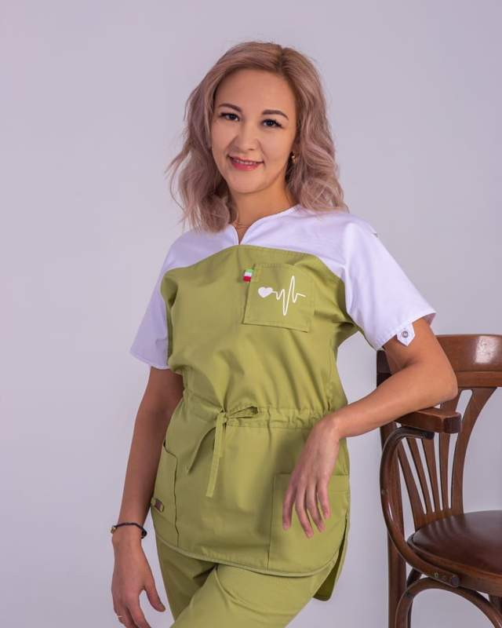
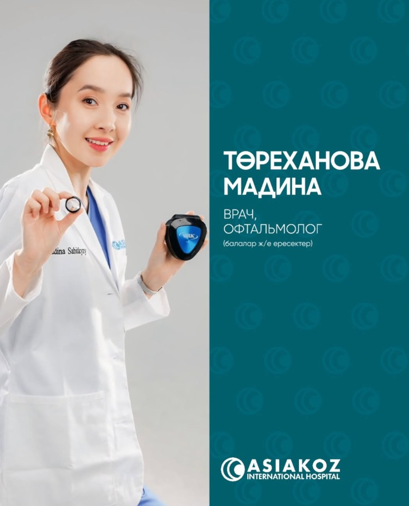

Орел Талип
Базовое образование: указано в личном профиле врача. Сертификаты: сроки действия указаны в профиле.
Подробнее →
У клиники AsiaKoz два филиала. Эрол Джошкун принимает в Актау, остальные врачи — в Алматы.
Адрес: пр. Райымбека, 176а
Запись: +7 777 888 01 80
Адрес: 7а микрорайон, 11/3, Актау
Запись: +7 775 863 01 80




Напишите в WhatsApp — подберем врача и удобное время.
Записаться в WhatsApp